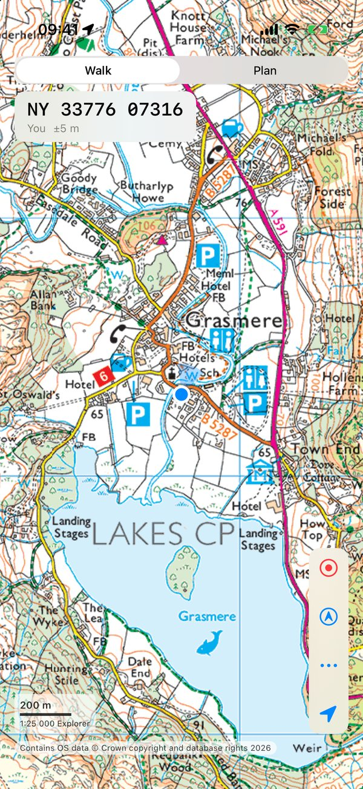
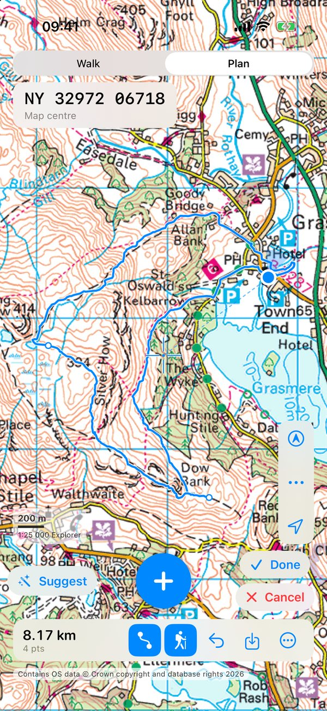
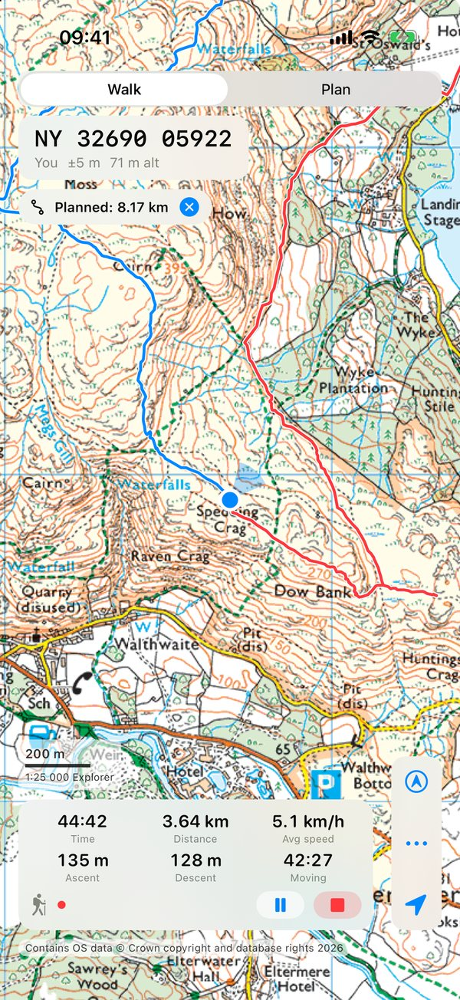
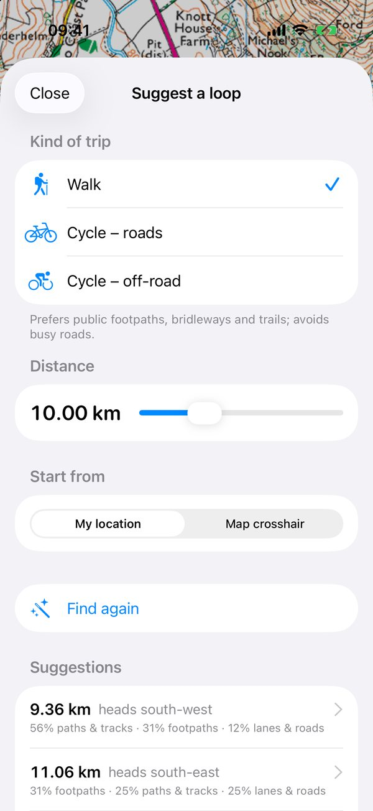

Wanderer is an iPhone app for walking, cycling and paddling in Great Britain, on the Ordnance Survey maps you'd take in your rucksack.
Most outdoor apps show their own maps, or redraw Ordnance Survey's data in a style of their own. Wanderer shows the real thing: the 1:25 000 Explorer map, with its field boundaries, rights of way and contours, and the 1:50 000 Landranger map as you zoom out.
On top of that it records where you go, plans routes that follow the paths on the ground, and suggests circular walks and rides from wherever you are. Everything you download works without a signal.

The Explorer map, with your grid reference.

Planning a route that follows the paths.

Recording a walk.
The map
Wanderer draws Ordnance Survey's maps in their own projection, the British National Grid, so they look exactly as they do on paper, without the slight stretching that comes from fitting them to a web map. Your position is shown as a grid reference, which is what a mountain rescue team, a guidebook or a friend with a paper map will understand. There are lighter road and outdoor styles too, for when the Explorer map is more detail than you need.
The map can be turned so that the way you're facing is up, and back to north at a tap. Every piece of map you look at is kept on the phone, and before a trip you can download a whole area, a national park or a stretch of coast, so the map is there when the signal isn't.
Recording
Choose walk, cycle or kayak and press record. Wanderer keeps going with the phone in your pocket and the screen locked, and shows the time, distance, average speed and the height you've climbed. The climb is measured with the iPhone's barometer, which is far steadier than GPS height. The figures are on the lock screen and in the Dynamic Island too, so there is no need to unlock the phone to see how far you've come.
The track is saved as you go. If the phone runs flat or the app is closed, the walk is still there when you open it again, ready to carry on. Finished tracks are kept as GPX files you can find in the Files app and open in other software.
Planning
To plan a route, move the map until the crosshair is where you want to go and press the button. With snapping on, each leg follows the footpaths, bridleways, tracks and lanes between your points, and a point dropped near a path lands on it. For walking, Wanderer prefers public rights of way and keeps off busy roads. For cycling there are two choices: quiet lanes and cycleways for a road bike, or bridleways, byways and tracks for something with wider tyres. Neither will take you along a public footpath, where you have no right to ride.
The paths come from OpenStreetMap, whose volunteers have mapped Britain's paths in remarkable detail, including which are public rights of way.
Suggestions

Suggested loops, and what they're made of.
When you'd rather not plan at all, tell Wanderer what sort of trip you want and how far, and it will suggest three circular routes from where you're standing, each heading off in a different direction. Each one says what it's made of, for instance 56% paths and tracks, 31% footpaths and 12% lanes, so you can tell at a glance which is the walk across the fields and which is mostly road. Pick one and it becomes a route you can change, save and follow.
Saved routes
Routes you plan and walks you record are listed together, newest first. Each has a switch to show it on the map, so you can lay last week's walk alongside the one you're planning, or keep a route on screen to follow. Distances can be shown in kilometres or miles.